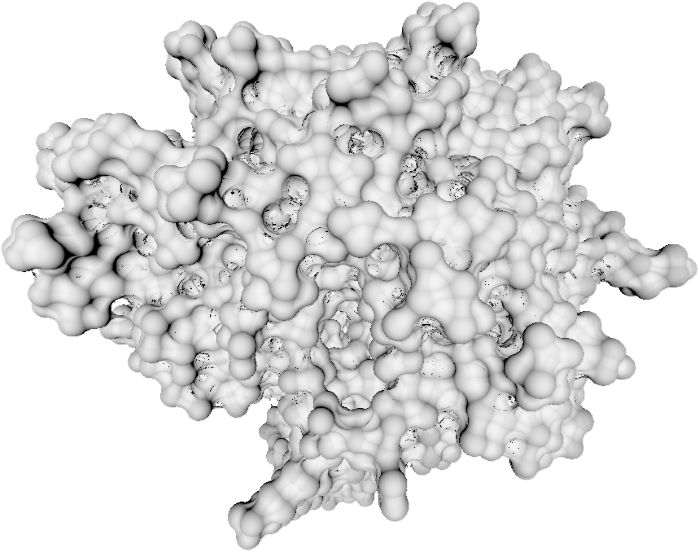
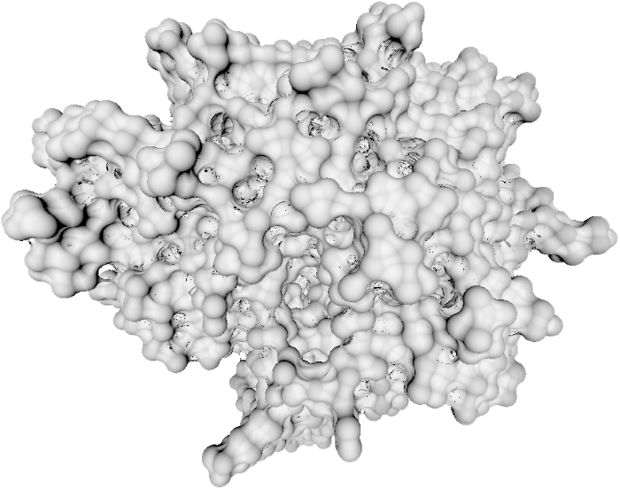

Implicit Representation of Molecular Surfaces
 

Introduction
This is an implementation of paper Implicit Representation of Molecular Surfaces for Visualization 2 course at TU Wien. This version is implemented in Rust programming language and WebGPU API. Compared to the original implementation, this one will run on any hardware that supports either Vulkan or DX12.
Interface
To run the application, you just need to click on the molecules.exe. It might happen that you do not have installed redistributable libraries for Windows. In that case, an installer is provided as VC_redist.x64.exe. A default test scene consisting of 3 atoms will show up. You can drag and drop any .pdb file to the window to view It.
On the left side of the application, you can tweak different parameters. Aside from solvent radius, the parameters adjust balance between smoothness of movement, rendering speed and quality of the rendering.
- Solvent radius: size of a solvent for molecular surface
- Max neighbours: the amount of neighbours that should be considered at every step of the sphere marching line
- Max steps per frame: upper limit of steps on the sphere marched line that should be computed. Keep this at low number so that your GPU does not time out and you can smoothly move around with the camera
Controls
- Mouse Wheel (scroll): Zoom In/Out
- Left Mouse Key (hold) + Move mouse: rotate over the molecule
Data Sets
The files containing molecules are described in the .pdb format. You can find many of them at Protein Data Bank
Some of the molecules are downloaded for you in the pdb folder.